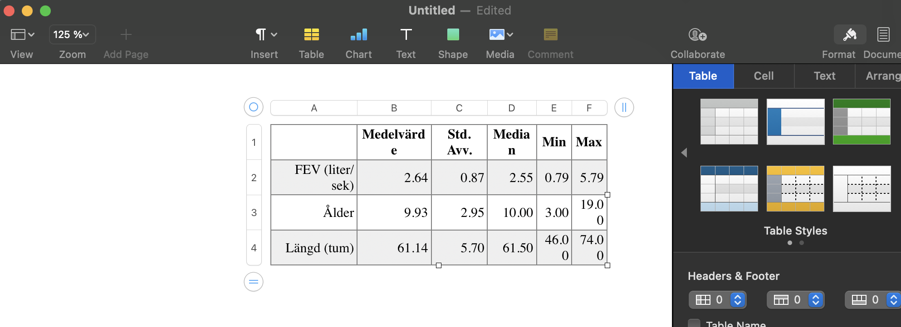

Kapitel 7 Tabeller
Diskreta variabler förekommer ofta i statistisk dataanalys. En betydande del av programmeringsblocket har handlat om diskreta variabler, hur de bäst beskrivs i tabeller och hur de kan illustreras med hjälp av diagram. Detta kapitel syftar till att underlätta hanteringen av de tabeller som diskuterats tidigare och tar diskuterar därför kortfattat formalia kring tabeller, till exempel hur de bör struktureras och på vilket sätt de bäst inkluderas i en rapport. Kapitlet avslutas med ett exempel som visar hur en tabell smidigt kan exporteras från R för att användas i ett Word-dokument.
7.1 Principer för tabeller
I princip gäller att sunt förnuft bör tillämpas vid konstruktion och användning av tabeller av olika slag. Naturligtvis ska allt som står i en tabell gå att läsa och vara relevant. Många gånger är det lätt att inkludera information som inte är relevant för analysen av bara farten, men detta skapar nästan alltid förvirring och det blir för läsaren oklart varför onödig information inkluderats.
Vid arbete med inlämnings- och seminarieuppgifter under kursens gång rekommenderas att nedan punkter tas i beaktande när tabeller ska användas.
- Tabellrubriker placeras ovanför tabeller.
- Tabellrubriker ska enkelt förklara för läsaren vad tabellen syftar till att beskriva, men ska inte nödvändigtvis innehålla detaljer. Detaljer gör sig oftast bättre i själva tabellen.
- Tabellen ska vara självförklarande.
- Tabellresultat ska alltid att beskrivas i text, med hänvisning till tabellen.
- Undvik att ha alltför många linjer i tabeller. Ofta räcker faktiskt tre horisontella linjer - en ovanför kolumnnamnen, en under kolumnnamnen och en nedanför sista raden.
7.2 Exportera tabell till HTML-fil
Alla rapporter eller vetenskapliga artiklar bör inkludera en beskrivning av urvalet, dvs variablernas fördelning i stickprovet. Frågan som då besvaras är “Vilka är det vi vi undersöker?”. Ibland är denna beskrivning placeread i början av rapporten eller arikeln, och ibland i en bilaga i slutet av rapporten. Observera att syftet inte är att göra inferens, utan enbart att beskriva de observationer som finns i urvalet. Detta innebär normalt sett att medelfel, konfidensintervall eller \(p\)-värden inte redovisas i denna tabell.
I Kapitel 5 diskuterades utförligt hur R kan användas för att skapa tabeller som innehåller olika typer av information om en eller flera variabler i ett stickprov. Tanken bakom tabellerna är nästan alltid att de ska inkluderas i någon sorts rapport, och de behöver därför exporteras till t.ex. ett Word-dokument och snyggas till. Denna export kan göras manuellt, men det finns två stora nackdelar (risker) med en sådan approach.
- Om tabellerna är väldigt stora, alltså innehåller väldigt många mått eller variabler, är det mycket tidskrävande att exportera tabellerna värde för värde.
- När tabeller exporteras manuellt är det väldigt lätt att något går fel. Värden kan till exempel hamna i fel cell, kommatecken kan hamna på fel ställe, och det är lätt att råka skriva fel siffra någonstans.
För att minimera dessa risker kan R användas för att exportera tabeller i sin helhet, som sedan kan snyggas till i den ordbehandlare som används. Resten av detta ägnas åt ett exempel som ämnar visa på ett sätt att göra detta. För enkelhetens skull används samma datamaterial som i Kapitel 6. Gå därför tillbaka och kopiera in koden med datamaterialet till ditt nuvarande script, så att du kan följa med i exemplet.
För att komplettera en studie är det önskvärt att skapa en tabell som visar stickprovsmedelvärde, stickprovsstandardavvikelse, median, minsta värde och största värde för var och en av de tre variablerna i datamaterialet. En sådan tabell skapas enkelt med koden nedan.
# Sammanfattning av variabeln fev
fev_summary <- c(mean(fev), sd(fev), median(fev), min(fev), max(fev))
# Sammanfattning av variabeln age
age_summary <- c(mean(age), sd(age), median(age), min(age), max(age))
# Sammanfattning av variabeln height
height_summary <- c(mean(height), sd(height), median(height), min(height), max(height))
# Gör varje vektor till en rad
tab_summary <- rbind(fev_summary, age_summary, height_summary)
# Skriver ut matris/tabell
tab_summary
> [,1] [,2] [,3] [,4] [,5]
> fev_summary 2.636780 0.8670591 2.5475 0.791 5.793
> age_summary 9.931193 2.9539352 10.0000 3.000 19.000
> height_summary 61.143578 5.7035128 61.5000 46.000 74.000Eftersom tabellen ska synas i en rapport är det önsvärt att snygga till den genom att lägga till rad- och kolumnnamn. Detta görs med koden nedan.
rownames(tab_summary) <- c("FEV (liter/sek)", "Ålder", "Längd (tum)")
colnames(tab_summary) <- c("Medelvärde", "Std. Avv.", "Median", "Min", "Max")
tab_summary
> Medelvärde Std. Avv. Median Min Max
> FEV (liter/sek) 2.636780 0.8670591 2.5475 0.791 5.793
> Ålder 9.931193 2.9539352 10.0000 3.000 19.000
> Längd (tum) 61.143578 5.7035128 61.5000 46.000 74.000För att exportera tabellen till en HTML-fil krävs paketet xtable. Installera därför detta paket med koden install.packages("xtable"), och aktivera det sedan med library("xtable"). Koden som används för att exportera tabellen är
print(x = xtable(tab_summary), # Anger vilket objekt som ska exporteras
type = "html", # Anger att det ska skrivas i HTML
file = "sammanfattning.html") # Anger namn på HMTL-filen som ska skapasDet finns en del saker som är värda att notera i koden ovan
- Genom argumentet
xanges vilket objekt som ska exporteras, alltså vilken tabell som ska skrivas ut. Notera att objektnamnet inte anges individuellt, genom funktionenxtable(). Detta är mycket viktigt, och argumentet måste alltid specificeras genomxtable(), annars kommer exporten inte att fungera. - Argumentet
typebör alltid vara specificerat som just"html". - I argumentet
fileanges vilket namn HTML-filen som skapas avRkommer att ha. Namnet kan såklart bestämmas på ett lämpligt sätt, men vad som är viktigt är att ändelsen.html(lägg märke till punkten i börjat) alltid måste finnas efter filnamnet.
När koden ovan har körts sparas en ny fil i den mapp som är inställd som working directory. Filen har namnet som specificerades i argumentet file ovan, och kan öppnas i en helt vanlig webbläsare (alltså Chrome, Safari, etc). För att föra över tabellen till en ordbehandlare (alltså något i stil med Word eller Pages) är det lättast att först öppna filen i en webbläsare och kopiera innehållet, precis som visas i bilden nedan.
När detta är gjort kan tabellen klistras in i vald ordbehandlare och snyggas till enligt önskemål. När nedanstående tabell klistras in i Pages blir resultatet som i bilden nedan. Tabellen kan sedan redigeras som vanligt, med fördelen att risken för felinmatade siffror minskas markant.

Notera att objektet som skrivits ut ovan är av typen matrix, se koden nedan.
class(tab_summary)
> [1] "matrix" "array"Det går även att exportera objekt som har skapats med funktionen table() på samma sätt. Testa gärna själv att som övning exportera en av tabellerna som skapades i Kapitel 5, och sedan klistra in och snygga till den i en ordbehandlare.
7.3 Paket för tabeller
Du lär dig på denna kurs det som är nödvändigt för att lösa de uppgifter som krävs utifrån kursens mål och innehåll. Du gör detta utan att använda paket och det enda externa paket för tabeller som vi använder är xtable() som används för att exportera tabeller. För den intresserade kan det efter kursen vara värt att kika närmare på något eller några av följande paket:
Table1summartoolsgttablesDescTool
Det bör också nämnas att en anledningar till att R är populärt är just det stora antalet paket.
7.4 Övningsuppgifter
7.4.1 Uppgift 1
Koden
set.seed(152021)
s <- sample(x = c("A", "B", "C", "D"), size = 100, replace = TRUE)kan användas för att skapa en vektor med grupptillhörigheter för 100 olika individer. För varje element i vektorn s väljer funktionen sample() slumpmässigt ett av värdena i vektorn som ges till funktionen genom argumentet x, alltså kommer varje element höra till en av grupperna "A", "B", "C", och "D".
Funktionen set.seed() används för att säkerställa att alla studenter får samma vektor s. Eftersom sample() tilldelar element slumpmässigt kommer varje student få olika s om set.seed(152021) inte körs direkt innan koden för s.
- Kopiera och kör de två raderna kod ovan. Skapa sedan en vanlig frekvenstabell som beskriver hur många observationer som finns i varje grupp. Spara tabellen i ett objekt vid namn
tab_s.
- Använd
xtable(), enligt ovan, för att exporteratab_still en HTML-fil.
- Tabellen som skrivs ut ovan blir inte riktigt som förväntat, utan den skrivs ut som en tabell med två kolumner snarare än två rader. Detta åtgärdas enklast med hjälp av så kallad transponering. Transponering innebär, i korta drag, att varje kolumn i tabellen görs om till en rad (alternativt att varje rad görs om till en kolumn), och implementeras i
Rmed funktionent(). Kopiera koden från deluppgift b, men använd ändra det första argumentet så attx = xtable( t(tab_s) ). Kom även ihåg att ändra namnet på output-filen. Hur hur ser tabellen som exporteras ut nu?
7.4.2 Uppgift 2
Återgå nu till tabellen tab_summary som skapades i kapiteltexten. Tabellen som exporterades i kapiteltexten visar två decimaler i varje cell, och detta är default för xtable(). Ibland är det önskvärt att själv kontrollera hur många decimaler som skrivs ut i en tabell, det kan vara nödvändigt att ha färre decimaler för att få in tabellen på ett A4 eller ha fler decimaler för större precision i en skattning.
Antalet decimaler som används i tabellen kontrolleras med argumentet digits i funktionen xtable(). Default är, som sagt, att digits = 2, men antalet kan såväl ökas som minskas efter önskemål. Viktigt är att argumentet måste specificeras inom anropet av xtable() för att få efffekt, och det räcker inte att bara sätta det inom print().
Med hjälp av informationen ovan, exportera tab_summary till en HTML-fil, där fyra decimaler används i varje cell i tabellen.
7.4.3 Uppgift 3
Förfarandet i föregående uppgifter kan användas även när det rör sig om korstabeller. För att göra en korstabell krävs som bekant två kategoriska variabler, vilka kan genereras med koden nedan.
set.seed(152021)
s <- sample(x = c("A", "B", "C", "D"), size = 100, replace = TRUE)
r <- sample(x = 1:6, size = 100, replace = TRUE)- Kopiera koden ovan, kör den i RStudio, och skapa en korstabell där
rär kolumnvariabel ochsär radvariabel. Spara tabellen i ett objekt som hetertab_rs.
- Exportera
tab_rstill en HTML-fil.
- Använd
tab_rsför att skapa en korstabell som visar andelar istället för frekvenser, andelarna ska vara baserade på kolummntotaler. Exportera den nya andelstabellen till en HTML-fil, och se till så att tre decimaler visas i tabellen som exporteras.